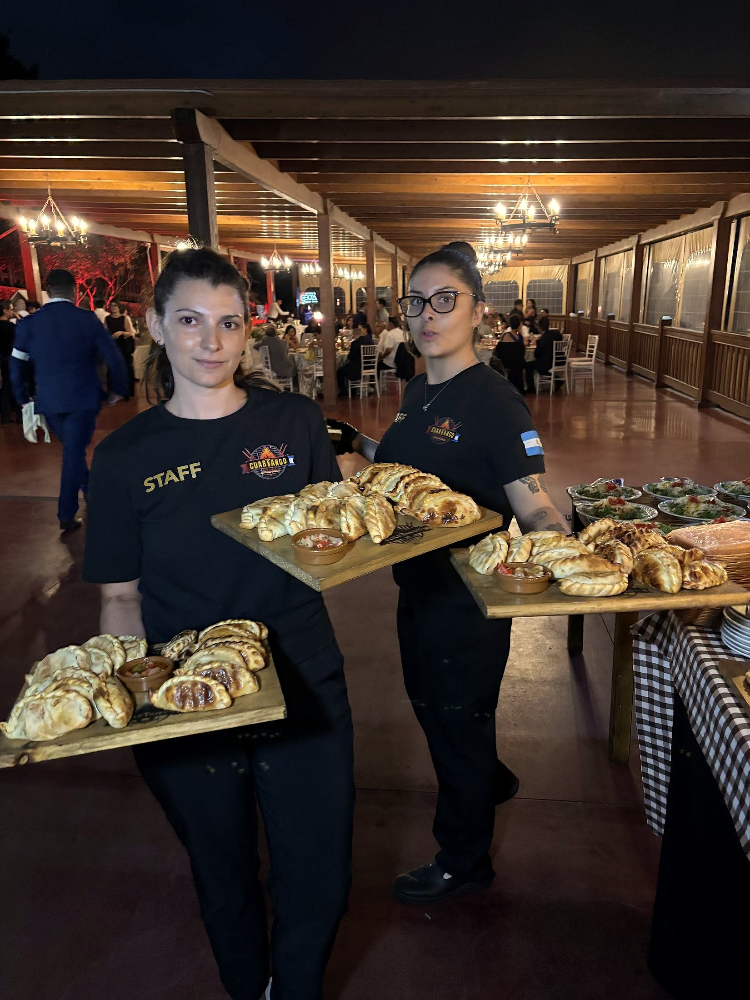

Nuestra cocina: fuego, brasa y tradición argentina
Donde la carne es un arte y el fuego, tradición
Cocinamos como en casa, en Argentina
Producto de calidad, recetas de siempre y el fuego como protagonista. Entrepanes artesanos, empanadas caseras y carne de primera, servidos con la hospitalidad de quien te recibe en su propia mesa.
Del fuego a la mesa
Cuatro momentos de nuestra cocina. Desplázate para recorrerlos.
Lo que nos define
Tradición
Cocción al más puro estilo tradicional argentino, con leña, brasa y parrilleros expertos que dominan el arte del asado.
Producto
Carne de primera y recetas de siempre: entraña, vacío, costillar, chorizo argentino, empanadas y milanesas.
Hospitalidad
Presentaciones rústicas y elegantes, con detalles que combinan lo criollo con lo gourmet, y un trato como en tu propia mesa.
De la brasa a la bandeja
Desliza el control para comparar.
Sabores de la casa
Desliza para ver más. Toca una imagen para verla en grande.
Quien te recibe, te recibe como en casa
Detrás de cada parrilla y de cada mesa hay un equipo que cuida los detalles: el punto de la carne, la tabla caliente, la bandeja que llega a tiempo.

Preguntas frecuentes
¿Cómo cocinan en Cuartango Argentina?
Al más puro estilo tradicional argentino: con leña y brasa, y con parrilleros expertos que dominan el arte del asado. Cortamos la carne a cuchillo y presentamos cada plato de forma rústica y elegante, combinando lo criollo con lo gourmet.
¿Qué platos son típicos de la parrilla de Cuartango Argentina?
Entraña, vacío, costillar de ternera, chorizo argentino, pimientos rellenos de queso y huevo, empanadas de carne y de pollo y, de postre, piña a la parrilla con helado de vainilla y dulce de leche.
¿Dónde puedo probar la cocina de Cuartango Argentina?
En el local de Las Palmas de Gran Canaria, donde está la parrilla; el nuevo local de Vecindario abrirá próximamente. También llevamos la parrilla a tu evento con nuestro catering con parrillero.